第六章 定积分的应用
定积分不仅具有深刻纯粹的数学理论价值，更是解决工程技术、几何测量、物理动力学与天体力学中连续累加物理量的通用利器. 解决这类实际问题的根本方法就是元素法（又称微元法）. 本章将首先阐明微元法的数学机理与操作步骤，随后将定积分全方位应用于计算平面图形面积、旋转体体积与任意已知平行截面立体体积、平面曲线弧长等经典几何学问题；进而深入解决变力沿直线做功、液体侧压力、质点引力等经典物理学模型，充分展现微积分“以微积分大、化不均匀为均匀”的巨大威力.
第一节 定积分的元素法
在第五章中，我们通过“分割、近似、求和、取极限”四步法求得了曲边梯形的面积与质点位移. 在工程实际中，很多具有整体连续分布特征的物理量 $U$（如质量、功、压力等），都满足区间可加性：即如果将区间 $[a, b]$ 分成许多小区间，整个量 $U$ 就等于各个小区间上相应部分改变量之和.
- 根据实际问题选取一个自变量（例如 $x$），并确定其整体变化区间 $[a, b]$；
- 在 $[a, b]$ 内任取微小区间 $[x, x + dx]$，计算相应于该微小区间的量 $\Delta U$ 的线性主部（近似值），记作： $$dU = f(x)dx$$ 称 $dU$ 为所求量 $U$ 的微分元素（或微元）；
- 在全区间 $[a, b]$ 上对微元 $dU$ 进行定积分累加，即得所求总量： $$U = \int_a^b f(x)dx$$
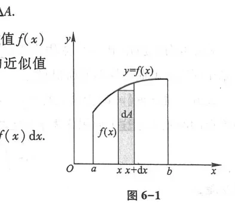
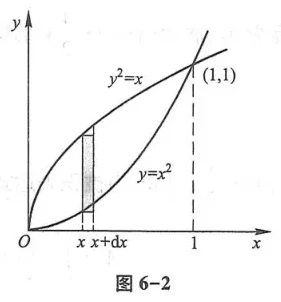
第二节 定积分在几何学上的应用
一、平面图形的面积
1. 直角坐标系下的面积
由上曲线 $y = f_2(x)$、下曲线 $y = f_1(x)$ 及两直线 $x = a, x = b$ 所围成的平面图形面积（图 6-3、图 6-4），其面积元素为 $dA = [f_2(x) - f_1(x)]dx$，总面积为：
$$A = \int_a^b [f_2(x) - f_1(x)]dx$$
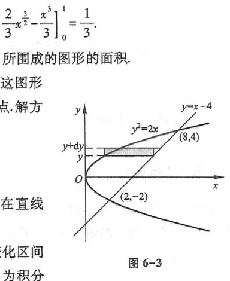
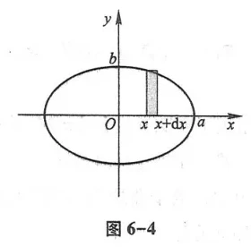
若选用 $y$ 为积分变量，则面积元素为 $dA = [\varphi_2(y) - \varphi_1(y)]dy$（图 6-5、图 6-6）：
$$A = \int_c^d [\varphi_2(y) - \varphi_1(y)]dy$$
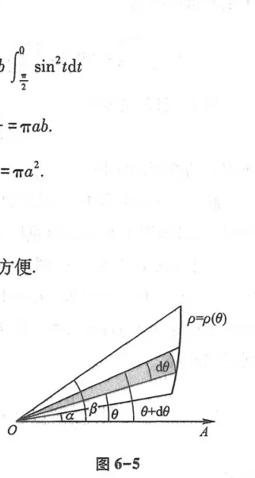
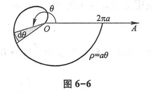
2. 极坐标系下的面积
由极坐标方程 $\rho = \rho(\theta)$ 及两条射线 $\theta = \alpha, \theta = \beta$ 所围成的曲边扇形（图 6-7、图 6-8），面积微元等于以 $\rho$ 为半径、顶角为 $d\theta$ 的小圆扇形面积：$dA = \frac{1}{2}\rho^2(\theta)d\theta$. 总面积为：
$$A = \frac{1}{2}\int_\alpha^\beta \rho^2(\theta)d\theta$$
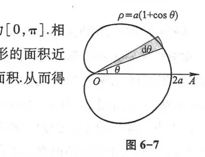
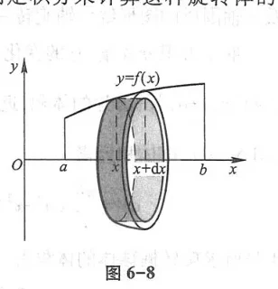
二、空间立体的体积
1. 旋转体的体积
由曲线 $y = f(x)$、直线 $x = a, x = b$ 及 $x$ 轴所围成的平面图形绕 $x$ 轴旋转一周构成的立体（图 6-9、图 6-10），取厚度为 $dx$ 的小圆薄片为微元，体积元素为 $dV = \pi [f(x)]^2 dx$. 旋转体总体积为：
$$V_x = \pi \int_a^b [f(x)]^2 dx$$
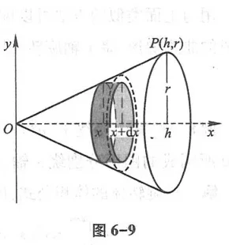
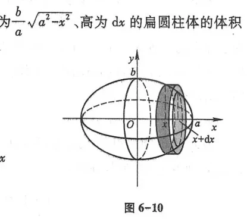
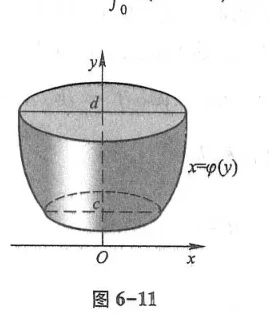
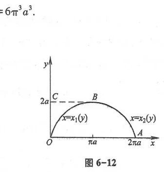
若平面图形绕 $y$ 轴旋转，采用圆柱薄壳法（柱壳微元）：$dV = 2\pi x f(x)dx$，总体积为 $V_y = 2\pi \int_a^b x f(x)dx$.
2. 平行截面面积已知的立体体积
如果立体的垂直于 $x$ 轴的任意截面面积 $A(x)$ 是 $x$ 的已知连续函数（图 6-13、图 6-14、图 6-15），则厚度为 $dx$ 的平截头薄板微元体积为 $dV = A(x)dx$，总体积为：
$$V = \int_a^b A(x)dx$$
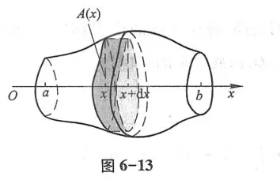
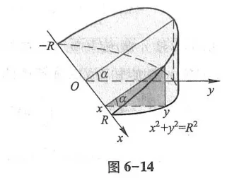
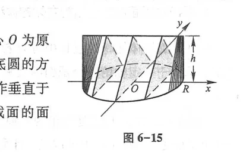
三、平面曲线的弧长
根据第三章的弧微分公式 $ds = \sqrt{dx^2 + dy^2}$（图 6-16），平面曲线从起点到终点的弧长公式：
- 直角坐标方程 $y = f(x)$ ($a \le x \le b$)：$s = \int_a^b \sqrt{1 + [f'(x)]^2}dx$（图 6-17）
- 参数方程 $\begin{cases} x = \varphi(t) \\ y = \psi(t) \end{cases}$ ($\alpha \le t \le \beta$)：$s = \int_\alpha^\beta \sqrt{[\varphi'(t)]^2 + [\psi'(t)]^2}dt$（图 6-18）
- 极坐标方程 $\rho = \rho(\theta)$ ($\alpha \le \theta \le \beta$)：$s = \int_\alpha^\beta \sqrt{\rho^2(\theta) + [\rho'(\theta)]^2}d\theta$（图 6-19）
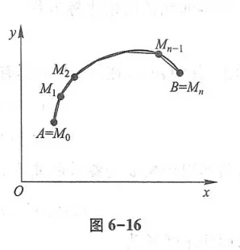
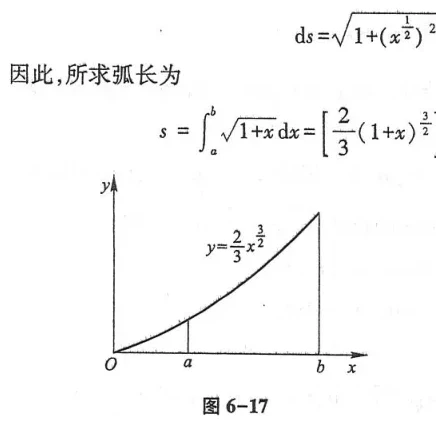
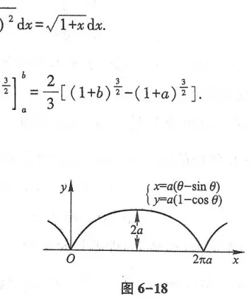
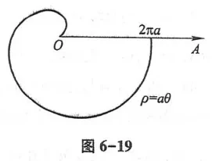
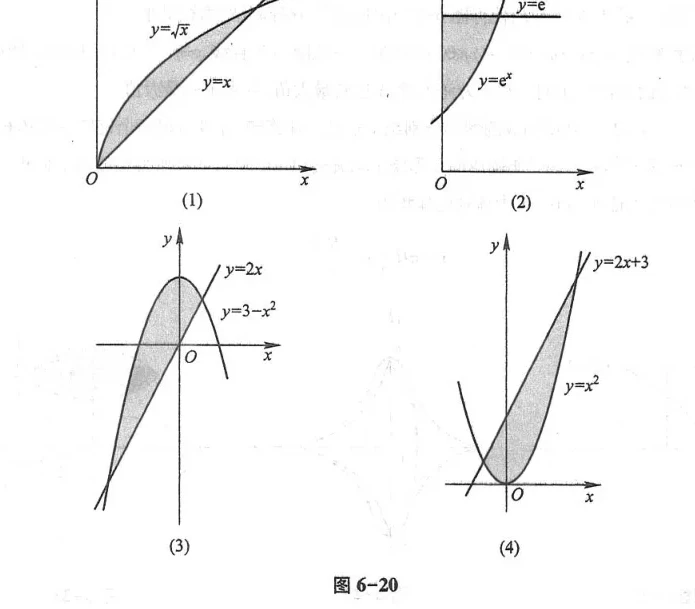
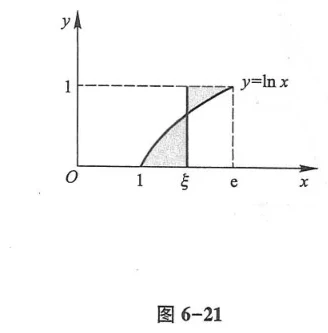
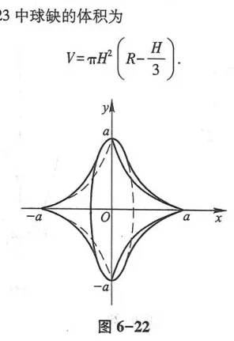
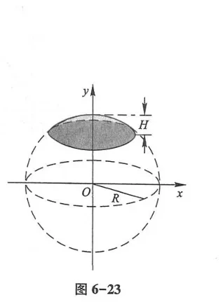
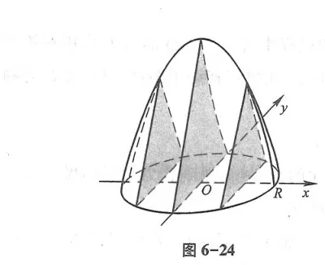
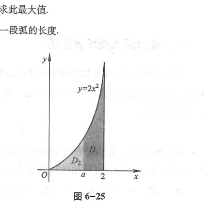
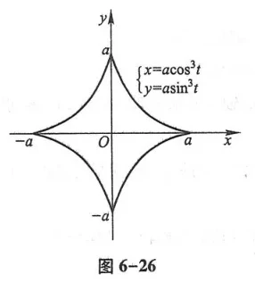
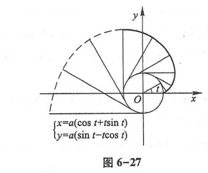
第三节 定积分在物理学上的应用
一、变力沿直线作功
设大小随位置变化的力 $F(x)$ 沿 $x$ 轴正向推动质点由点 $x = a$ 移动到点 $x = b$（图 6-28、图 6-29）. 取位移微元 $dx$，在该微小位移上力可视为恒力，功的微元为 $dW = F(x)dx$. 总功为：
$$W = \int_a^b F(x)dx$$
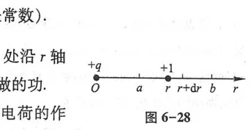
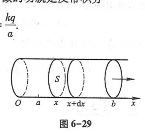
抽水做功：设容器盛满密度为 $\rho$ 的液体，需要将其从顶部完全抽尽（图 6-30、图 6-31）. 取深度为 $x$、厚度为 $dx$ 的薄水层，其质量为 $dm = \rho A(x)dx$，需提升高度为 $x$，故功元素为 $dW = \rho g x A(x)dx$，总功为 $W = \rho g \int_0^H x A(x)dx$.
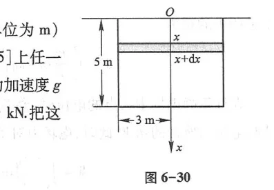
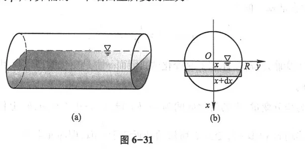
二、水压力（侧向静水总压力）
处于液体中深度为 $x$ 处的压强为 $p = \rho g x$. 对于垂直浸入液体中的平板薄片，在深度 $x$ 处取水平窄条（宽度为 $b(x)$，高为 $dx$），其面积为 $dA = b(x)dx$，水压力微元为 $dP = \rho g x b(x)dx$. 平板受到的总侧向水压力为：
$$P = \int_a^b \rho g x b(x)dx$$
三、引力与质心模型
设细棒位于坐标轴上，线密度为 $\rho(x)$（图 6-32）. 细棒对棒外一点 $M_0$ 处质点的引力，通过万有引力定律建立微元 $dF = G \frac{m \rho(x)dx}{(x - x_0)^2}$ 进行积分求解（图 6-33、图 6-34、图 6-35）.
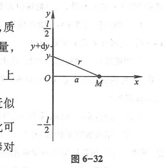
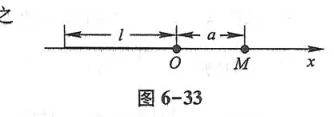
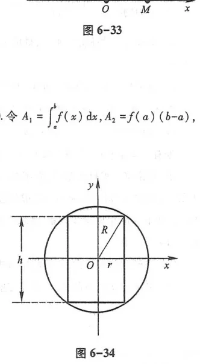
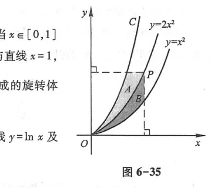
总习题六
1. 求由抛物线 $y = 2 - x^2$ 与直线 $y = -x$ 所围成的平面图形的面积.
解：联立方程组解交点横坐标：$2 - x^2 = -x \implies x^2 - x - 2 = 0 \implies x_1 = -1, x_2 = 2$.
在 $[-1, 2]$ 上，$2 - x^2 \ge -x$：
$$A = \int_{-1}^2 [(2 - x^2) - (-x)]dx = \left[2x - \frac{x^3}{3} + \frac{x^2}{2}\right]_{-1}^2 = \left(4 - \frac{8}{3} + 2\right) - \left(-2 + \frac{1}{3} + \frac{1}{2}\right) = \frac{10}{3} - \left(-\frac{7}{6}\right) = \frac{9}{2}$$
2. 求星形线 $\begin{cases} x = a\cos^3 t \\ y = a\sin^3 t \end{cases}$ ($a > 0$) 绕 $x$ 轴旋转所得旋转体的体积.
解：利用对称性取第一象限部分 ($t \in [0, \frac{\pi}{2}]$) 乘以 $2$：
$V = 2\pi \int_0^{\frac{\pi}{2}} y^2 |dx| = 2\pi \int_0^{\frac{\pi}{2}} (a\sin^3 t)^2 \cdot 3a\cos^2 t \sin t dt = 6\pi a^3 \int_0^{\frac{\pi}{2}} \sin^7 t \cos^2 t dt$.
利用点火公式：$\int_0^{\frac{\pi}{2}} \sin^7 t (1 - \sin^2 t)dt = I_7 - I_9 = \frac{6}{7}\cdot\frac{4}{5}\cdot\frac{2}{3} - \frac{8}{9}\cdot\frac{6}{7}\cdot\frac{4}{5}\cdot\frac{2}{3} = \frac{16}{35}\left(1 - \frac{8}{9}\right) = \frac{16}{315}$.
故 $V = 6\pi a^3 \cdot \frac{16}{315} = \frac{32}{105}\pi a^3$.